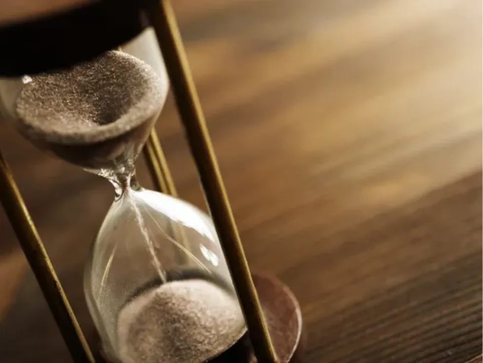
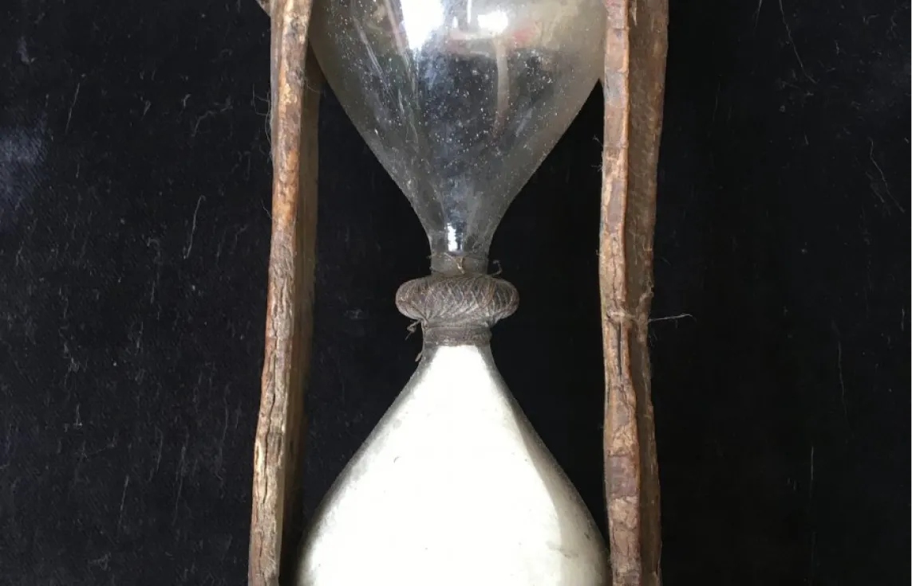
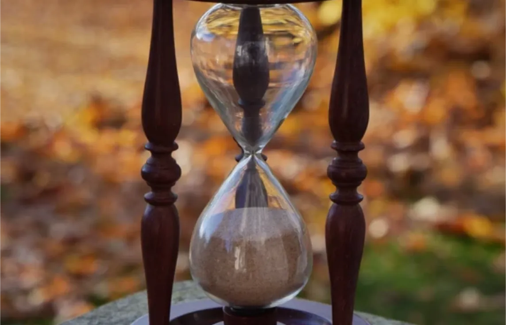
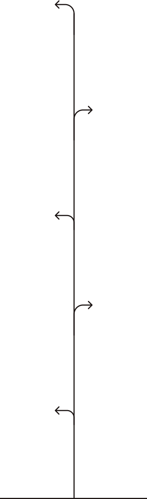

Publié le 24/10 par Léo BAUDRY. Temps de lecture : 2 min
Le sablier : un outil intemporel
Comment survivre sans nos objets technologiques ?
Le sablier est l'un des objets le plus fascinant inventé par l'humanité pour mesurer le temps.
Il dépend d'un principe très simple : deux conteneurs de verre sont reliés par un petit passage, permettant à des
grains de sable de s'écouler de haut en bas, en un temps défini au préalable.
Depuis son invention dans l'Antiquité, cet outil a marqué l'histoire en tant qu'instrument de précision
, utilisé non seulement pour mieux rythmer sa journée, mais aussi pour améliorer le train de vie.
Dans un monde où les horloges électroniques et les montres connectées sont omniprésentes, on oublie souvent l'utilité
de cet outil sans technologie.
Sablier ancien
Dans un avenir où nos technologies actuelles disparaîtraient, le sablier pourrait de nouveau retrouver son
utilité quotidienne.
À une époque où la gestion du temps repose presque exclusivement sur des systèmes numériques,
l'utilisation sérieuse d'un sablier peut paraître inutile, mais offre pourtant une solution fiable pour
mesurer une période efficacement.
Qu'il s'agisse de mesurer une durée de cuisson, de réguler un cycle de travail ou même de chronométrer des
activités physiques, le sablier n'a besoin ni de batteries, ni d'électricité. Il serait donc l'un des rares objets capable
de fonctionner de manière autonome, et sans maintenance complexe.
Carousel d'images de sabliers



Exemples de sabliers.
Le sablier, par sa nature même, impose une réflexion plus lente et
plus consciente sur le temps.
Contrairement aux horloges digitales qui nous inondent d'informations précises et constantes, le
sablier est un objet qui exige une certaine patience.
Les grains de sable qui s'écoulent doucement nous rappellent que le temps est une ressource précieuse,
que nous ne pouvons pas contrôler.
Ce retour à une approche plus naturelle et directe de la gestion du temps pourrait inciter les
utilisateurs à redécouvrir l'importance des pauses et de la contemplation.
Dans un monde théoriquement sans électricité ni technologie moderne, le sablier deviendrait
donc bien plus qu'un simple outil de mesure.
Il représenterait une nouvelle façon de penser le temps : plus lente, plus
respectueuse du rythme de la nature, mais aussi plus autonome.
En cela, il symbolise une forme de résilience face à la perte des technologies
dont nous dépendons aujourd'hui.
Frise d'objets similaires

Sablier
Pour garder conscience du temps qui passe, compter le temps de travail, essayer de continuer à vivre selon nos habitudes sédentaires.
Vélo
Pour continuer à pouvoir se déplacer efficacement et de manière autonome.
Couteau en silex
Vraiment utile pour chasser, et se procurer de la nourriture étant donné que les chaînes de productions alimentaires de masse n'existent plus.
Torche
Devenu nécessité pour s'éclairer la nuit, le temps de trouver une alternative pour un meilleur éclairage.
Bol en terre cuite
Un rappel des assiettes modernes, ces bols seront une absolue nécessité afin de conserver un minimum d'hygiène lors des repas. Ils seront aussi utiles pour stocker de la nourriture et autre.